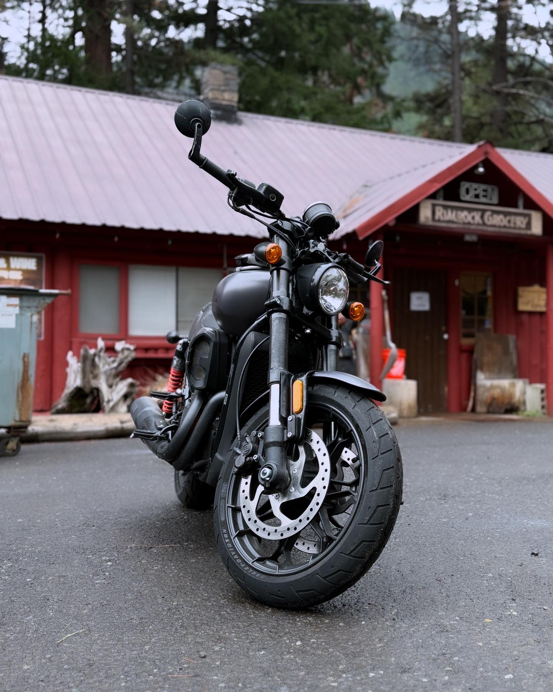

Why I Chose the 2017 Harley-Davidson XG750A
When I was looking for a motorcycle, I didn’t want something oversized or ornamental. I wanted something I could actually ride confidently in real life. The 2017 Harley-Davidson XG750A (Street Rod) gave me that balance. It feels modern without losing Harley character, and it’s powerful without feeling intimidating.

Why it matters to me
Riding this bike has become one of my most reliable resets. It demands focus, which clears mental noise almost immediately. As someone who is 5’2”, fit and balance matter. The mid-controls and upright stance make this bike manageable at stops and responsive in traffic. I’m not fighting the machine. I’m working with it.
What makes the XG750A special
- 749cc High Output Revolution X V-Twin — The power delivery is smooth and usable. It accelerates confidently without feeling overwhelming.
- Liquid-cooled engine — This matters more than people think. In traffic and summer heat, it stays comfortable.
- Dual front disc brakes — Strong, predictable stopping power. That translates directly to confidence.
- Inverted front forks — More stable front-end control, especially during tight turns and city riding.
- Sport-oriented riding stance — Active and responsive, not reclined or passive.
- Blacked-out aesthetic — Clean, modern, slightly aggressive. It looks intentional without being flashy.
Here’s Why I Think This Bike Is Worth It
I created this sales presentation for a previous class, but it reflects how I genuinely feel about this bike. It blends technical detail with personal experience. If you're considering a Harley but want something more agile and modern, this model deserves serious consideration.
The video is unlisted on YouTube to ensure reliable playback while keeping the repository lightweight.
Quick Specs
- Model: Harley-Davidson XG750A (Street Rod)
- Year: 2017
- Engine: 749cc High Output Revolution X
- Cooling: Liquid-cooled
- Style: Sporty, modern, blacked-out